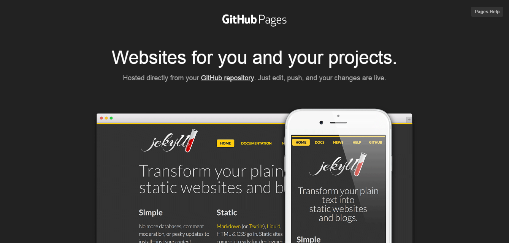

When I went for several interviews to get my first internship in software companies, most of my interviewers asked for 'personal website' or 'online portfolio'. At that time my expectation was that I only need to bring my hard copy CV or resume and I will be good to go, right? No. I was asked to show any recent projects that I have done and at that moment I realized I miss something important. I ended up describing my projects with mere words. It was not sufficient. Your future employers need to see the final products, sample codes or blog posts on what you already know. That was when I realized I need an online portfolio.
If you think about it, online portfolio or personal website has many more advantages than the traditional, run-of-mill printed CV or resume. It is more dynamic and more personalized. You can insert photos, videos, sample codes and many more! Not mentioning it is more environmentally friendly than printing your CV (especially when you have tons of achievements). You can also write articles to share your experience or knowledge about things that you learnt. In other words, you can help others who are facing similar difficulties. Awesome!

There are many platform that you can utilize to build your portfolio. Some make use StackOverflow as their CV while many love to use LinkedIn profile. I personally like Github Page the most as it is versatile and flexible. You can upload your side project, blog posts, videos, photos, Adobe Illustrator design or any other portfolio you can think of. You have the freedom to design the page to show your personal taste. And it is completely free! I strongly recommend you to try it, even if you never learn coding before. I have to say that it is not the easiest platform to get your content online. You need to learn basic HTML, CSS, Javascript and,well, Git. If you are determined to get your hands dirty, these are the steps you can take to create your own masterpiece online!
Now you have a basic HTML page, the next task is to add content to your portfolio. Here you need to learn the basic of HTML, CSS and (a little bit) of Javascript. You can easily find many tutorials online to learn about these languanges. Again, I like to go to W3School to learn various syntax of these versatile trio (why versatile? You can build a fully functional web application just by knowing these 3 languanges). You can also visit Codecademy which provides great step-by-step tutorial. There you go, the beginning is always not easy. If you persevere and continue to learn, you will get the reward! Happy coding :)